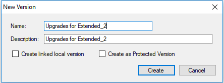

The purpose of the Team Development Version tab is to allow users to manage the Knowledge Base Versions of the GeneXus Server instance from the GeneXus IDE.
Also, this section allows users to Bring Changes to the active local version from another Development Version on the GeneXus Server.
The Versions Dialog allows users to:
Actions over a Development Version
Right-clicking on a Development Version will display a menu:
Where:
To show a menu only with the Freeze option, right-click on a Development Version.
If the user right-clicks on a Frozen Version a menu will be shown with the following options:
- New Version option. This action will create a Development Version from the selected Frozen Version.
- Checkout Version option. This action creates a local version linked to this remote version.

- If the user wants to create a new version and bring the new version into a new local version he has to click on the checkbox Create a linked local version
- If the user wants to make the new version protected he has to click on the checkbox Create as Protected Version.
|